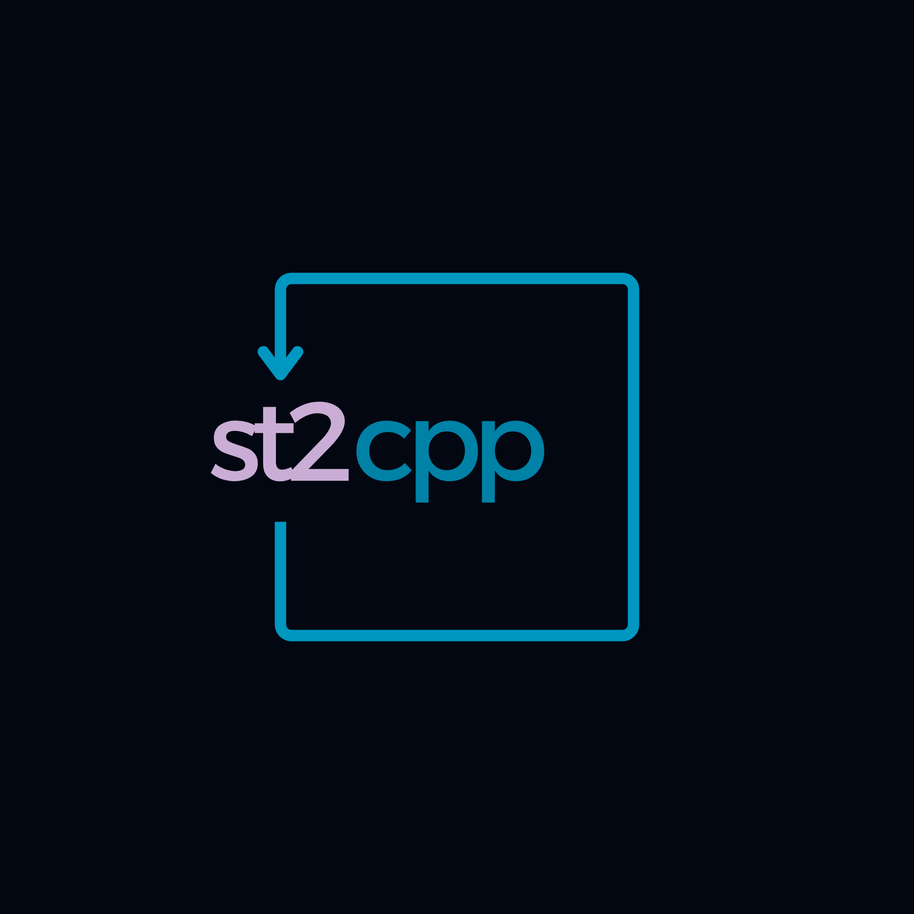
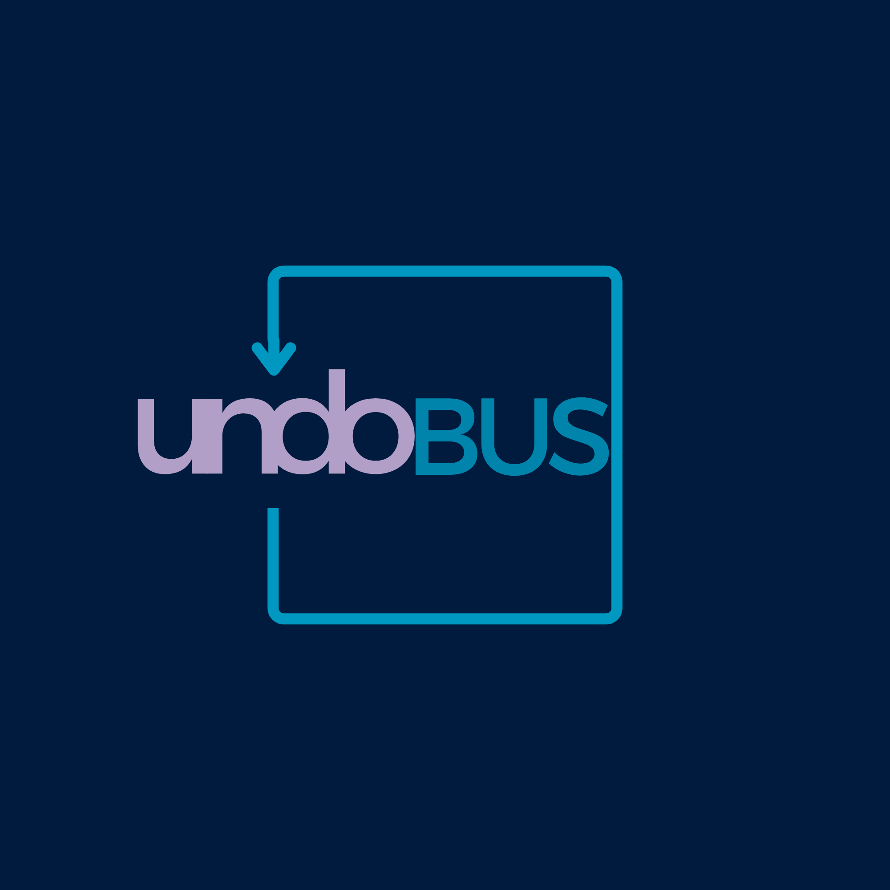
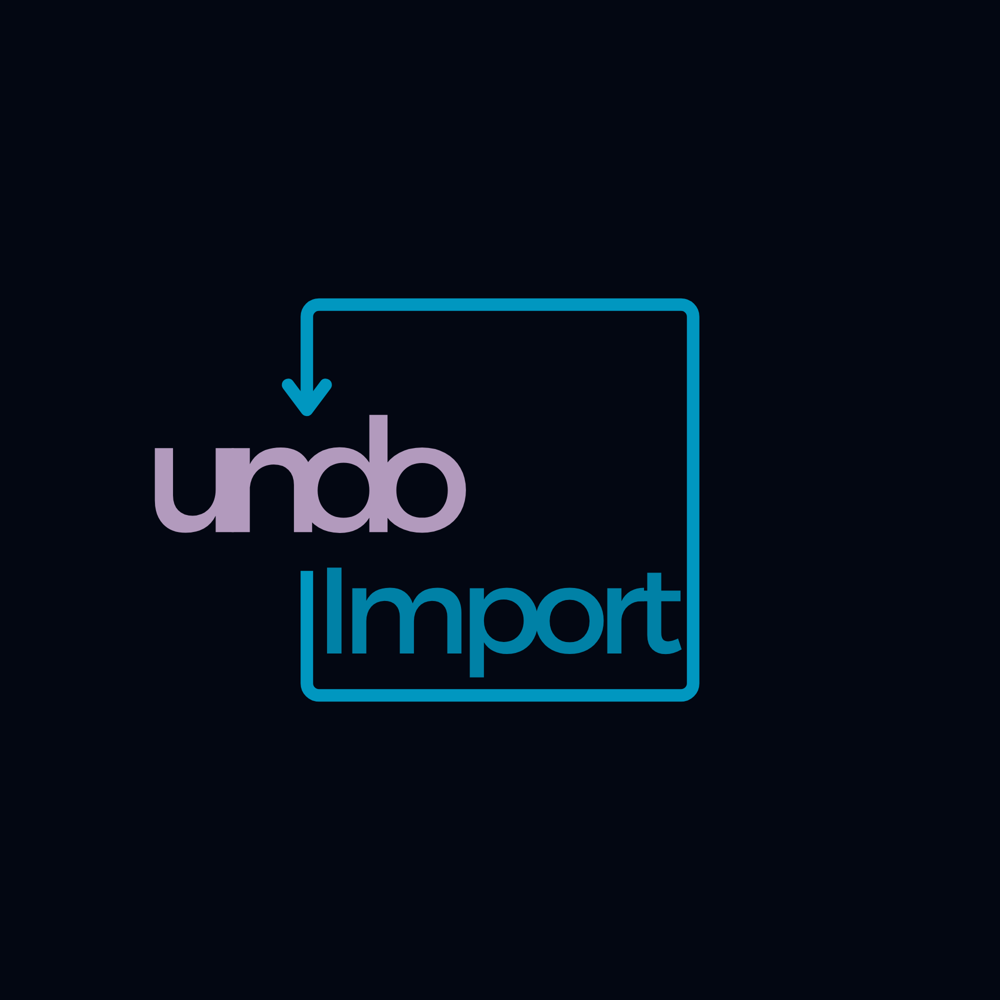

The undoRT Ecosystem
Five components, one pipeline — from hardware OS to legacy migration.

Transpiles IEC 61131-3 Structured Text into clean, native C++17. Supports Function Blocks, structs, enums, arrays, inheritance, and modular project generation.
Released · v0.1.2A multi-threaded SoftPLC runtime that executes C++ binaries compiled by st2cpp. Designed from scratch to run natively on undoOS with no intermediate VM.
In DevelopmentA Linux Preempt-RT configuration optimized for multi-platform industrial hardware. Real-time tasks are pinned to isolated cores with FIFO scheduling for predictable latency.
In Development
Fieldbus management built on IgH EtherCAT Master, running deterministically in user-space alongside undoPLC. Launching with EtherCAT; further protocols planned.
In Development
Ingests existing TwinCAT and CODESYS projects, extracts logic and variable declarations, and routes them into the undoRT build pipeline via st2cpp.
In Development